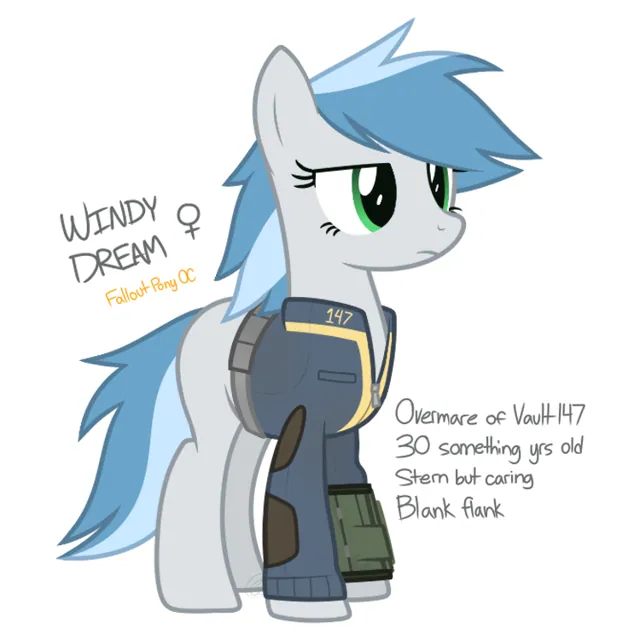
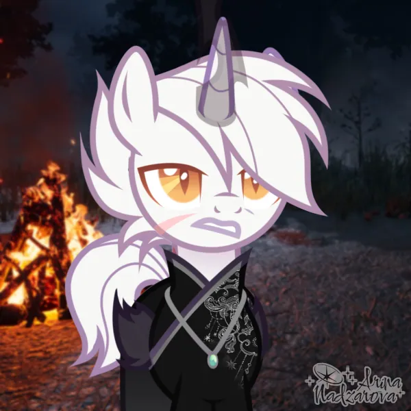

Karta postaci - Rusty Spur
Karta postaci (Fallout: Equestria V1.22) — Rusty Spur, kucyk ziemny. Gracz: Erwin.
 Stajnia 97
Stajnia 97
Dział 03 z 07 · drużyna
12 materiałów
Postacie graczy: karty, portrety, znaczki i ich osobiste materiały.
Karta postaci (Fallout: Equestria V1.22) — Rusty Spur, kucyk ziemny. Gracz: Erwin.
Odpowiedzi do tworzenia postaci: Ciche Brody, noc, kiedy przyszli, kogo zostawił.
Zeszyt Rusty’ego Spura: co wie o świecie, o sobie i o prawie. Część stron czeka na jego rękę.

Karta postaci (Fallout: Equestria V1.22) — Tymianox.


Karta postaci (Fallout: Equestria V1.22) — Uriel. Gracz: zychu.
Co wie o gryfach ten, którego wychowała Igła — kompendium dla postaci Uriela. Aktualna wersja.


Poprzednia wersja Księgi Szponu, zachowana dla porównania.
Enter — otwórz · Esc — zamknij